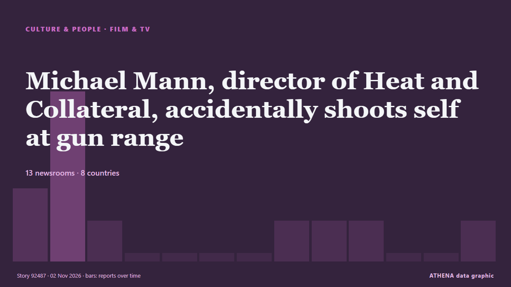

Culture, People & Lifestyle

Film & TVMichael Mann, director of Heat and Collateral, accidentally shoots self at gun range
He sustained a "superficial injury" in the incident. from CNA (Channel NewsAsia)
| 20 Oct | 0 |
|---|---|
| 21 Oct | 4 |
| 22 Oct | 4 |
| 23 Oct | 11 |
| 24 Oct | 13 |
| 25 Oct | 6 |
| 26 Oct | 48 |
| 27 Oct | 72 |
| 28 Oct | 74 |
| 29 Oct | 74 |
| 30 Oct | 75 |
| 31 Oct | 46 |
| 1 Nov | 28 |
| 2 Nov | 2 |
King Charles to address Commonwealth with 'unflinching honesty' amid slavery focus
European traders enslaved 12.5 million Africans, including 3.2 million transported by Britain. from Express Tribune
Harry Styles dresses as viral ‘pizza rat’ for final Madison Square Garden show
His band continued the theme by dressing up as New York City landmarks and references. from Evening Standard (London)
Strictly Come Dancing fans 'absolutely devastated' as spoiler reveals who left
Strictly Come Dancing fans have shared their disappointment after the latest results were leaked online. from WalesOnline
Sir Ian McKellen leads heartbreaking tributes to Sir Patrick Stewart after death at 86
Tributes pour in for Sir Patrick Stewart after his death following a battle with Alzheimer’s disease. from Evening Standard (London)
Japanese DJ allegedly drugged in HK club from possibly spiked drink, admitted to ICU
Initial tests showed that there are four types of drugs in Hamasaki's system. from Mothership
PV Sindhu shows her creative side in title win at Hylo Open
PV Sindhu triumphed at the Hylo Open Super 500 in Germany, overpowering Line Hojmark Kjærsfeldt in an impressive straight-set victory. from Times of India
Best Celebrity Halloween Costumes: Kim Kardashian as North West, Paris Hilton as Britney Spears and More
Halloween and Hollywood go hand in hand, especially given that most costumes draw inspiration from entertainment. from Variety
James Bond actor Ben Whishaw says franchise ‘needs to be reinvented’
The 46-year-old has starred in three James Bond films alongside Daniel Craig as the character of Q. from Evening Standard (London)
After Louvre Heist and String of Thefts, Europe’s Smaller Museums Are on Guard
Europol said museum thefts were becoming more forceful and increasingly focused on precious metals and gemstones. from The Straits Times
US rapper Macklemore launches 'Free Palestine Tour'
Macklemore launches his Free Palestine Tour in Dublin after Ed Sheeran drops him, drawing sold-out crowds and pro-Palestinian support. from The New Arab
Celebrity Traitors star Maya Jama praised for ‘generous donation’ to charity
The 32-year-old revealed she made a donation to Action for Children on Saturday. from The Irish News (Belfast)
Patrick Stewart, Star Trek and X-Men actor, dies at 86
Sir Patrick Stewart, the acclaimed British actor best known for playing Captain Jean-Luc Picard in Star Trek: The Next Generation and Professor Charles Xavier in the X-Men film franchise, has died at… from Gulf News
Romesh Ranganathan and Sebastian Croft relieved Celebrity Traitors win is out
The actor, 24, and comedian Romesh Ranganathan were crowned the winners of the BBC reality show on Friday. from The Irish News (Belfast)
UK PM ‘open’ to slavery apology but not reparations
Andy Burnham made the remarks days before attending a Commonwealth leaders summit in Antigua and Barbuda, as King Charles III tours the Caribbean. from Free Malaysia Today
Macklemore says he was unable to ‘stay silent’ about Israel-Palestine conflict
The US rapper performed at the OVO Arena Wembley on Friday night. from The Irish News (Belfast)
Robert Downey Jr. & Pedro Pascal Serve MCU Role Reversal For Halloween: “Costume Swap!”
With less than two months left on the Avengers: Doomsday clock, Robert Downey Jr. and Pedro Pascal swapped sides for Halloween. from Deadline
Halloween Mirrors Spooky Beliefs of the Ancient Greeks
Could Halloween, the annual celebration observed in numerous countries across the world on October 31, have ancient Greek roots? from Greek Reporter
The Dachshund Is the Muse in an Exhibition Showcasing the Sausage Dog’s History in Art
BREMEN, Germany (AP) — The humble dachshund is taking center stage in a new exhibition in Germany that explores the history of the sausage dog in art — and visitors are welcome to bring their… from The Canadian Press (via CityNews)
Inde Navarrette Takes Swipe at Shane Gillis During ‘SNL’ Monologue
Following a Trump-centric cold open that featured the return of Tom Hanks’ David S. from Variety
The unsung heroes of snake antivenom production
There are the hidden figures working behind the scenes in the music industry. from IOL
Indian Filmmaker Sanjay Gupta Dies: ‘Kaante’ Director Was 57
Sanjay Gupta, the Indian director best known for the crime drama films Kaante and Shootout at Lokhandwala, died Friday, October 30, after a fall at his home in Mumbai. from Deadline
Test your Halloween movie knowledge with our spooky quiz
It's officially spooky season! But how well do you really know your slashers? from ABC News Australia
Mahama visits Kente Exhibition by Russia-Ghana Parliamentary Forum in Moscow
President John Dramani Mahama on Thursday visited the Kente Exhibition by the Russia-Ghana Parliamentary Forum as part of the official activities surrounding the Third Russia-Africa Summit in Moscow. from MyJoyOnline
2026 Daytime Emmy Awards: ‘General Hospital’ Wins Best Daytime Drama
'The Kelly Clarkson Show' won a leading five awards, as 'Beyond the Gates' also took home four trophies. from The Hollywood Reporter
Gardaí identify man found dead at recycling centre
Gardaí believe unidentified male may have been murdered, says source. from The Irish Times
Deep Purple postpones shows as Ian Gillan hospitalised for ‘medical emergency’
Shows in Leipzig and Hamburg were called off as the 81-year-old singer was hospitalised. from The Irish News (Belfast)
Fallon Sherrock speaks out after criticism over £501,000 Luke Littler win
The Netflix show saw Luke Littler take on a number of amateur contestants who were trying win £501,000. from Liverpool Echo
What time is The Celebrity Traitors on? Here's when you can watch the final episode
Here is the exact time The Celebrity Traitors 2026 final is on tonight. from The Scotsman
Angel Studios CCO Lays Out “Values-Based” Initiative Banning Sex, Nudity, F-Words & “Misuse Of God’s Name”: “Hollywood Lives In A Bubble”
Angel Studios, the production company behind Sound of Freedom, Cabrini, His Only Son and The... from The Citizen (Tanzania)
Three or four checks, then one big raid: How a Puchong chicken warehouse that flouted halal rules ran for 20 years
KUALA LUMPUR, Oct 31 — A chicken slaughtering and processing warehouse in Puchong, raided under Ops Taring Chiller... from Malay Mail
Kelly Osbourne pays tribute to Ozzy on her birthday: ‘I wish you were here’
The media personality shared a photo of the pair hugging on a couch. from The Irish News (Belfast)
Paula McIntyre recipes: Now’s the time and plaice for whole baked fish
Cosy and comforting staples to make with kids. from The Irish News (Belfast)